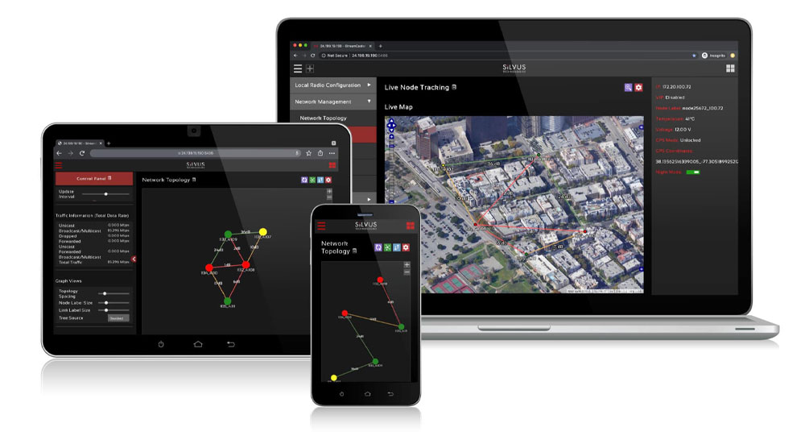
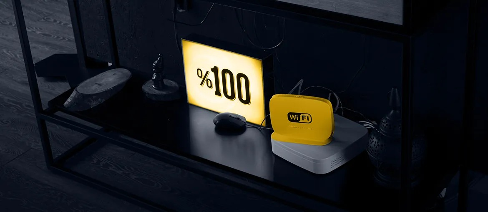

Map the load
Map StreamScape, StreamLC, and ATAK workflows that create the most support load during new regional deployments.
Applications engineering support
Silvus is growing fast under Motorola Solutions. Your applications team has to support StreamScape, ATAK, StreamLC, field tools, and customer work without slowing core radio innovation.
We saw the Southern Europe hiring signal and the new production expansion. That points to more deployments, more support load, and more pressure on Applications Engineering.

The signals say Silvus is moving from strong demand into bigger global delivery. New radios, StreamScape 5.0, the ATAK plugin, and Europe field roles all add software surface area. The hard part is not only firmware. It is keeping network management, PTT, mobile EUD support, test automation, and customer variants clean. If that work piles up, demos slip and senior engineers lose time on support.
Map StreamScape, StreamLC, and ATAK workflows that create the most support load during new regional deployments.
Build focused fixes in the non-classified application layer, with clean handoffs to your radio and firmware teams.
Add automated checks for network views, device setup paths, firmware update flows, and regression risk.
Ship weekly demos, review field feedback, and leave clear runbooks your team can own after the pilot.

Physical and virtual network views in one tool.
View case study
Remote device support with senior engineers and QA.
View case study